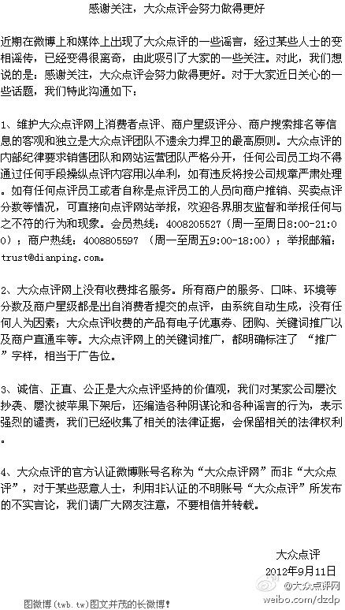

//@香辣五花肉://@Mia小筠: //@fannie菁菁://@芥末海蛎子://@DP梅超://@凌震文: 请所有关注我的大众点评的同仁们，在看到这条微博后，帮助转发，但不必发表任何评论。因为天理自在正者。点评人，做得正！Let's roll!@大众点评:【感谢关注，大众点评会努力做得更好】近期在微博上和媒体上出现了大众点评的一些谣言，经过某些人士的变相谣传，已经变得很离奇，由此吸引了大家的一些关注。对此，我们想说的是：感谢关注，大众点评会努力做得更好。对于大家近日关心的一些话题，我们特此沟通如下： 
//@bnu_chenshuo:转发微博@何宗键:在软件学院跟IT企业打交道这么多年，今年9月10日教师节。收到了三封来自企业高校合作部门的邮件。普通企业：群发，“祝大家教师节快乐”（公司就不公开了）。文艺企业：非群发，“祝何老师教师节快乐”（来自Google）。二逼企业：“IBM高校合作项目之专业课程结业证书项目，希望各位老师踊跃申请！“
//@程辉:建议安排在《OpenStack中国行活动》庆祝，今天将发布深圳站的活动，近期成都、武汉、西安的活动也将陆续发布，北京站活动：网页链接@ben_杜玉杰:#OpenStack#为了庆祝OpenStack基金会正式成立，OpenStack官方将会于9月19号在全球范围内举办社区庆典活动，欢迎各地Stacker一起参与。届时会发布基金会官方介绍。我发起了“OpenStack Foundation Global Meetup”活动，推荐您来参加！ 地址：网页链接
下午的新浪微博app讲座中得知，有专门为企业设置的勋章。同事马上想可以新建一个"程序员"的勋章，姑且不说这勋章是否抢手，据说新浪勋章报价是一百万。要说把勋章玩得最地道的是拿破仑，他创建军团时，颁了一万五千个勋章给他的士兵，面对指责勋章是玩具，拿破仑回答: 人就是被玩具所统治。